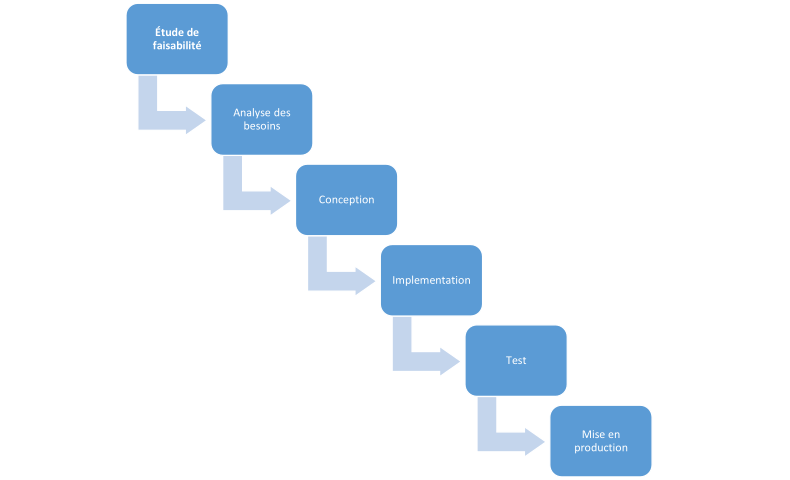

Les Principes de fonctionnement
Le principe du cycle en cascade suit une logique descendante où l'organisation du travail se décline une série de six principales phases ci-dessous :
Ces phases diffèrent en fonction du secteur qui utilise la stratégie, mais la théorie est la même. Chaque phase correspondent à des ensembles de tâches prédéfinies dans un planning de réalisation précis et en particulier :
- Une fois qu'une phase est terminée, ses résultats sont gelés. Il n'est plus possible de revenir en arrière et de réviser quoi que ce soit en fonction de l'évolution des besoins ou de nouvelles idées.
- Jusqu'à ce que les résultats de la phase en cours soient complets et approuvés, il est interdit de commencer un travail qui appartient à la phase suivante ou à toute phase ultérieure.
Étude de faisabilité
L'objectif principal de cette phase est décider de la nécessité du projet et d'analyser sa viabilité.
L'étude de faisabilité consiste à contrôler la réalisation d'un projet au travers de l'analyse de différents facteurs tels que : les facteurs économiques et financiers, technologiques, opérationnels et organisationnels, juridiques et commerciaux. Comprendre tous ces facteurs puis à déterminer les différentes stratégies possibles pour résoudre les éventuels le problème qu'ils peuvent engendrer offre une visibilité globale sur la mise en œuvre du projet et sur sa rentabilité. Ainsi, procéder à une étude de faisabilité offre de nombreux avantages puisqu'elle permet de :
-
Définir ses objectifs : une étude de faisabilité
ne se révèlera efficace que si l'objectif final du projet et les
avantages concrets qu'il générera sont parfaitement définis. En
utilisant le modèle SMART (une méthodologie de management et de
gestion de projet qui fonctionne par objectifs), les objectifs
seront fixés de sorte qu'ils soient
- Spécifiques : établir un objectif qui ne soit pas vague ni trop général, mais précis et clair dans sa formulation pour être aisément compréhensible.
- Mesurable : définir un objectif qui doit pouvoir être quantifié ou qualifié précisément. De cette manière, nous serons en mesures d'identifier les moyens à déployer pour atteindre votre but.
- Atteignable : formuler un objectif suffisamment ambitieux pour être motivant mais également acceptable, concret et possible à atteindre. Il énonce non pas ce que vous voulez faire, mais ce que vous pouvez faire, compte tenu des moyens à disposition.
- Relevant : définir un objectif qui fait sens relativement à votre domaine l'activité.
- Temporel : définir un objectif définis et délimiter dans le temps. Disposer d'un calendrier permet aussi de réfléchir aux priorités et de les hiérarchiser.
- Analyser l'environnement du projet : au cours de cette étape, il est essentiel de prendre connaissance des réglementations en vigueur dans le secteur, de nouvelles opportunités du marché ainsi que de se renseigner sur les évolutions technologiques en cours et à venir. Il faut également vérifier que le projet soit en adéquation avec les opinions ou encore les intérêts de sa cible.
-
Évaluer les besoins du projet : ici, nous devons
réfléchir à tout ce qu'il est nécessaire de regrouper pour réussir
le lancement du projet selon les objectifs fixés. Il peut s'agir,
par exemple
-
De matériels
- Équipement informatique
- Outils de développements, etc.
-
Ressources humaines
- De compétences
- Formations
- Sous-traitance
- D'un local professionnel
-
Besoins techniques
- Spécifications techniques
- Innovations technologique, etc.
Une fois tous les éléments nécessaires listés, il est temps d'évaluer les coûts associés. Vous obtenez de la sorte une estimation budgétaire pour la réalisation de votre projet.
-
De matériels
-
Calculer le retour sur investissement : grâce aux
estimations de budget et à l'identification des opportunités à
venir, vous seriez en mesure d'évaluer les gains potentiels que le
projet peut apporter. Il est préconisé d'évaluer trois scénarios
concernant la direction que peut prendre le projet
- Un scénario optimiste : ce scénario est celui qui correspond à vos aspirations
- Un scénario réaliste : il est aussi indispensable d'élaborer un scénario prenant en compte une réponse du marché, pouvant être moins en avance que vos aspirations.
- Un scénario pessimiste : il faudra prendre en compte tous les éventuels aléas pouvant survenir.
La phase d'élaboration de scénarios sera un facteur-clé du succès futur de votre activité et chacun d'entre eux doit être rentable, même le scénario pessimiste!
- Évaluer les risques : avant de lancer le projet sur la base du scénario choisi, il faut encore procéder à une évaluation globale des risques encourus. Au cours de cette dernière étape de l'étude de faisabilité, il est important de s'intéresser aux risques qui peuvent être rencontrés par le projet
- Quels sont-ils ?
- Combien de temps dureront-ils ?
- Comment faire pour les minimiser ?
Répondre à ces questions permet d'identifier les risques qui peuvent mettre en échec un projet et de trouver une parade en amont pour les contourner ou y faire face.
Analyse des besoins
Sans une connaissance approfondie du domaine et du contexte dans lesquels évolue les acteurs du système, le risque de concevoir une solution qui, au final, ne résout pas (ou résout mal) le problème initial ou qui ne pourra pas s'adapter aux évolutions est élevé, d'où, pendant cette phase du modèle en cascade nous clarifions les objectifs à atteindre et faisons le point sur les attentes du client et/ou des utilisateurs de manière à affiner le périmètre du votre projet. Deux principales problématiques sont soulevées au cours de cette phase :
- Qui sont les utilisateurs ?
- Que veulent-ils faire avec le projet logiciel ?
Nous vérifions que le projet soit en adéquation avec les opinions ou encore avec l'intérêt de sa cible. Cette définition comprend une analyse réelle décrivant les problèmes et un conceptcible permettant de définir les fonctionnalités et les propriétés que le produit logiciel doit offrir afin de répondre aux besoins.
Analyser les besoins revient donc à découvrir des éléments de plus en plus précis. Pour y parvenir, nous devons :
- Commencer par décrire le contexte du logiciel à créer : il s'agit ici de déterminer avec précision le public concerné logiciel. Par public concerne, on entend les utilisateurs qui ont besoin de ce logiciel. Nous décrivons ici QUI devra utiliser le logiciel.
-
Décomposer en packages pour ne pas avoir à
analyser quelque chose de trop énorme d'un coup. Pour cette il
faudra se poser des questions telles que :
- Quelles sont les grandes parties qui doivent composer le logiciel ?
- Pour une partie précise, qui, parmi les acteurs identifiés l'utilisera ?
-
Enfin, nous devons préciser
QUI devra pouvoir faire QUOI grâce à cette
partie du logiciel. C'est ce qu'on appelle la définition des
cas d'utilisation. Pour ce ressortir ces cas d'utilisation, il
faudra construire un outil adapté à au contexte de son
investigation. Parmi les moyens utilisés, citons :
- Les entretiens individuels (auprès des utilisateurs et/ou du client)
- Les enquêtes à base de questionnaire
- Les réunions avec de participants cherchant à faire évoluer le logiciel
Illustration de chacune des points cites ci-dessus peut se faire en utilisant des diagrammes UML tels que :
- Diagramme de packages pour expliquer la décomposition du logiciel en parties distinctes.
- Diagramme des cas d'utilisation pour illustrer ce que le logiciel doit permettre de faire et par qui.
Conception
La phase de conception sert à l'élaboration d'un concept de résolution concret sur la base des besoins, des tâches et des stratégies déterminées au préalable. Au cours de cette phase, les développeurs élaborent l'architecture logicielle ainsi qu'un plan de construction détaillé du logiciel et se concentrent ainsi sur les éléments concrets tels que les interfaces, les Framework ou les bibliothèques.
Le résultat de la phase de conception inclut un document de conception avec un plan de construction logicielle, ainsi que des plans de test pour les différents éléments.
L'étape de conception fait intervenir les concepteurs créatifs UI-UX.
La mise en page implique la conception d'une ébauche, qui peut être graphique, pour avoir une idée de la conception du produit. L'objectif de la mise est présenter une structure d'information permettant une visite visuelle du contenu et des fonctionnalités de base.
L'architecture filaire conçu à la dernière étape est transformée en boutons, onglets, menus, tableaux de bord ; thèmes de couleurs, typographie et graphiques pour créer une mise en page de base.
En gardant l'esprit d'étude de la cible, il faudra concevoir un site responsive qui réponde à ses préférences et à ses exigences.
Comme pour la plupart des stratégies de gestion de projet, le modèle en cascade a des racines dans la production de logiciels. Aucun codage n'a lieu lors de cette phase, mais les spécifications sont établies sur la manière dont le travail doit être réalisé. Il est facile de voir comment cela s'applique à d'autres secteurs.
Dans la construction, par exemple, c'est la partie du processus où l'architecte dessine les plans, et l'électricien peut concevoir le plan pour l'éclairage, le plombier le plan pour l'eau et le constructeur se lance dans la conception de cartes de travail pour chaque équipe.
Implémentation
L'implémentation est le résultat d'un ensemble complexe de processus et de procédures dont la réussite passe par une préparation minutieuse.
La phase du codage implique la construction effective du produit. Les conceptions réalisées au cours des premières étapes sont transformées en éléments interactifs. Les concepteurs intègrent des composants et des fonctions au squelette du produit, en utilisant des Framework et des outils de développement.
Elle consiste à développer les fonctionnalités réelles du produit, à concevoir les éléments visuels tout en codant les instructions pour que chaque élément exécute les fonctions nécessaires. Lors de cette phase, le projet de logiciel est transposé dans la langue de programmation souhaitée.
Test
À cette étape, les composants individuels et l'ensemble intégré sont méthodiquement vérifiés pour s'assurer qu'ils sont exempts d'erreurs et répondent pleinement aux exigences décrites dans la première étape. Une équipe d'assurance qualité indépendante définit des « cas de test » pour évaluer si le produit satisfait entièrement ou partiellement aux exigences décrites dans la première étape.
Trois types de tests ont généralement lieu : tests unitaires de modules de code individuels ; test système du produit intégré ; et des tests d'acceptation, formellement menés par ou pour le compte du client.
- Tests unitaires de module de code individuels ; est le processus de test des modules individuels d'un programme.
- Tests système du produit intègre ; ici, les modules sont combinés dans un projet d'application et testes comme un package complet.
- Tests d'acceptation ; est un processus d'assurance qualité qui détermine dans quelle mesure un logicielle obtient l'approbation de l'utilisateur final.
Les défauts, s'ils sont détectés, sont enregistrés et des commentaires sont fournis à l'équipe de mise en œuvre pour permettre la correction. C'est également l'étape à laquelle la documentation du produit, telle qu'un manuel d'utilisation, est préparé, révisée et publiée.
Au final, les tests permettent d'assurer qu'un système logiciel répond aux besoins des utilisateurs en :
- Vérifiant si nous construisons le bon produit, que le logiciel fait le plus ce que l'utilisateur veut.
- Vérifiant que le logiciel est conforme à la spécification préalable.
- Evaluant le caractère utilisable ou non du système
Mise en production
La gestion de projet en cascade fonctionnera mieux lorsqu'un résultat concret doit être créé sur une période donnée. Tout doit être déjà conçu, planifié et documenté de manière approfondie, pas besoin de réfléchir sur les contraintes car le marbre est bien dressé.
Il s'agit ici de livrer le produit final et de le mettre en service. Il est aussi essentiel de prévoir une formation aux utilisateurs afin de s'adapter à la solution et d'être autonome le plus rapidement possible à son utilisation.
Même si la solution soit correctement livrée, et que le projet soit fini, ce dernier n'est pas terminé. Le besoin du client a de forte chance d'évoluer ce qui pourra développer un nouveau besoin du client à la solution livrée. Et c'est fait dans la phase de maintenance accompagné par des actions correctives et évolutives. Ce qui permettra une nouvelle expérience en termes d'expérience utilisateurs.
Exemple :
Une fois le projet terminé, le test fonctionnel et non fonctionnel complet ok, tout est bon. Maintenant le projet est prêt, Va-t-il être disposé sur le marché directement ? Ou bien dans l'environnement du client ? Cette étape s'appelle le déploiement ou la mise en production. Ok même si le projet est mis à disposition du client et sur le marché et que tout marche, si n'importe quel issu arrive dans l'environnement du client vous devez arranger le problème et si le client veut un ajustement, faites l'ajustement et mettez à nouveau le projet à disposition. Cette étape s'appelle la maintenance ; en termes de créations de logiciel, cette phase consiste à créer des correctifs et des mises à jour. Il s'agit de remédier à une liste d'anomalies repérée par le client.